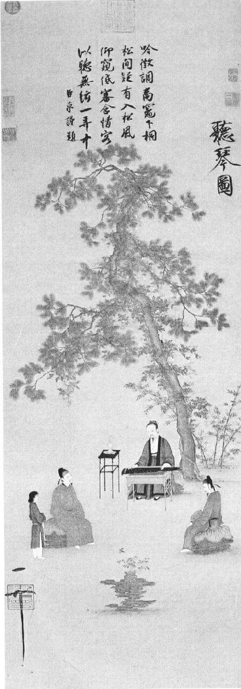
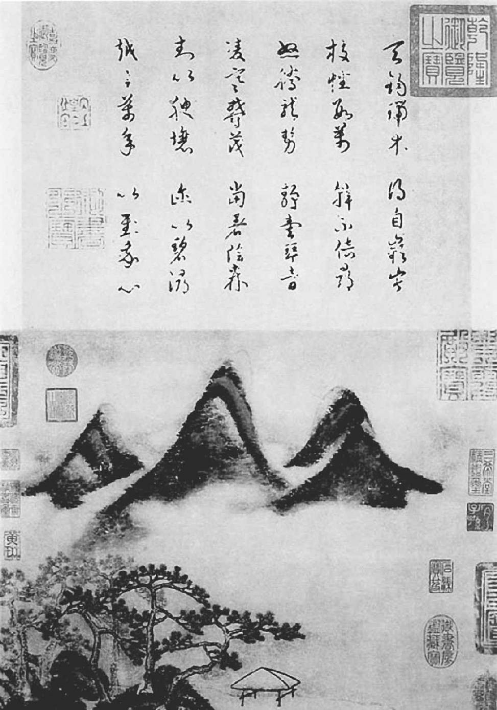
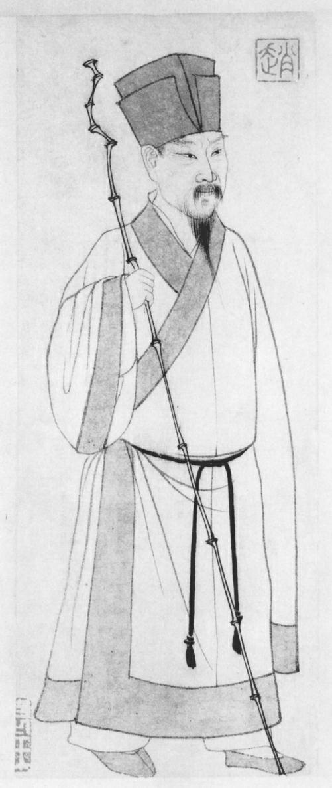

第二十八章 终了
哲宗在元符三年（一一〇〇年）正月去世，享年二十四岁，留在身后的是一代死亡、颓丧、疲惫的文臣学者。他父亲神宗有子十四人，他只有一子，乃刘美人所生，亦在幼年夭折。他弟弟继位，是为徽宗。徽宗身后遗有儿子三十一人、几幅名画、一个混乱的国家。他兄长所开始的，徽宗给做了结束。他还是任用那些人，遵行那些政策。王安石的国有资本主义，现在和神宗当政时期相提并论，被冠以“祖制”的神圣不可侵犯名义，使人敬而生畏。在丰裕国库的方法，在与北方民族兵戎相见两事上，徽宗也步王安石的后尘。集中财富于国库、于皇家，也许这个政策是为帝王者无法割爱的吧。但是实行此一政策的皇帝，必须付出其代价。在徽宗，那代价是丢弃王位，国都沦陷，是在俘虏中死于敌方。徽宗能画美丽的花鸟、交颈的鸳鸯，但是每一个帝王，只要能忍心对老百姓施虐政而为自己建筑琼楼玉宇、园囿亭台，则未有不失其王位者。
徽宗登基之时，国家之组织已烂，国家之元气已衰。有品有才有德之人乃文明社会产生之瑰宝，要假以长久之时日方能生长成熟。司马光、欧阳修、范纯仁、吕公著那一代，已是往者已矣。那一代的人才，或已惩处，或已流放，或因病因老而死，或遭谋害而亡。清议批评，至大至刚的思想与文章，那种气氛已然窒塞，一切政治生活全已污染腐坏。苏东坡及其门人学士为理想而从政之心，因遭逢迫害过深，已不复存其壮志雄心，尤其是当时政治的歪风仍与他们的浩然正气相左。凭皇帝一道圣旨，朝中即可立即出现一代新的正直博学、勇敢无畏的儒臣，那可真是难矣哉。若使一个享有政权滋味八年之久的大帮派轻易放下政权，那也是所望过奢了。
不过，苏东坡是暂时有好运来临。因为在元符三年（一一〇〇年）前半年，朝廷要由神宗之后——新皇太后摄政。那年四月，所有元祐老臣一律赦罪，虽然她在七月还政于其子，直到次年正月她去世之前，她却始终保有强大的力量保护元祐诸臣。在她在世之日，遭放逐的儒臣都蒙赦罪，或予升迁，或至少得到完全的行动自由。神宗的这位皇后就像她的婆婆一样，天性就能辨别人的善恶，这一点远胜过她的儿子，而且在女性单纯的智慧上，也更有知人之明。批评家和历史学家，沉迷于精练的词句、抽象的特点，而不能自拔，精研一代的政治与问题入而不能出，有时反而会忘记在对人终极的判断上，我们仍然逃不出两个基本的形容词“好”与“坏”。在总论一个人的事业人品时，他所能祈求得到的最高的那些赞美词里，“好人”一词终居其一。苏东坡所曾服侍的几位太后，似乎从未在朝廷大臣和政治之中涉及甚深。当然，章惇是个坚强有力的人，吕惠卿能言善辩，蔡京有精力有才干，但是皇太后现在只把他们归入“坏人”之列。
在五月，那个时代的闲云野鹤式的人物吴复古又出现了，把苏东坡遇赦的喜讯告诉他，并告诉他要调到雷州半岛西边的一县去。这消息不久就由秦观的来信证实，秦观目前谪居雷州，刚刚接到特赦令。
由现在起，苏东坡又要漂泊无定了。他渡海到了雷州以后，刚到了一个月，他接到命令要他去住在永州（今湖南零陵）。为了到永州，他改变路线，还在到永州的半途中，他终于接到可以随意到处居住的命令。他若一开始就得到可以自由定居的命令，兄弟二人很容易便在广州会面而结伴北归。苏子由接到命令调往湖南洞庭湖边的一个地区。因为那时，苏东坡只是奉令移居到海南岛的对面，离广州还很远，子由已经立即携眷北归——那时以前，他的家眷一直住在惠州东坡的房子里。等子由到了汉口附近，正往目的地去的途中，他又升了官，恢复了行动自由。因为在颍昌他有田产，别的孩子也住在那儿，他就回到颍昌去了。
苏东坡和弟弟子由不一样，他费时好久才离开了海南岛。他是等搭福建一只大船过海，但是空等了些日子，只好和吴复古、儿子过、他的大狗“乌嘴”一起渡海。这一群人一起到雷州去探望秦观，然后吴复古自己离去，飘然不见。苏东坡和吴复古二人此生足迹遍中国，所不同者，苏东坡是受别人的命令所驱使，而吴复古则完全听由己意，不受命于他人。回想起来，苏东坡一定很愿和吴复古易地而处。那样，他会更快乐，更自由。苏东坡如今启程北上，我们无须细表。在每一个他所经的城市都受人招待，受人欢迎，大可以称之为胜利归来。到每一个地方都有朋友和仰慕他的人包围着他，引他去游山游庙，请他题字。在接受命令到湖南赴任之后，他就同儿子，也可以说是长时期的伴侣，从沿海城市廉州北上往梧州——他曾经吩咐孩子们在那里等他。他到达时，发现儿媳和孙子们还没到。并且贺江水浅，乘船直往北到湖南行船不易。他决定走一条长而弯曲的路：回广州，再往北过大庾岭，再由江西往西到湖南。这段旅程要走上半年，但是幸而他不需要走完那条路线。
十月，他到了广州，又重新和儿孙等团聚。二子苏迨已经自北方到此来探望父亲。苏东坡在诗文中说自觉生活如梦。
在广州为他设宴者极为繁多。在他居海南之第二年，当时谣传他已死亡。在一次宴席上，一个朋友向他开玩笑说：“我当时真以为你死了。”
苏东坡说：“不错，我死了，并且还到了阴曹地府。在阴间路上遇见了章惇，决心又还了阳。”
《听琴图》 中国画 赵佶 宋
宋徽宗（1082—1135），名赵佶。哲宗病死，太后立他为帝，是为宋朝第八位皇帝。在位26年，国亡被俘受折磨而死，终年53岁。虽然做了皇帝，但也许他更适合做画家或书法家。注意，图中的弹琴者很可能就是徽宗的自画像。
这一大家人，有少妇有婴儿，一齐乘船往曲江。还不曾走很远，吴复古及一群和尚追上了他们，和这位大诗人在船上盘桓了几天。忽然吴复古生了病，不久死去，就那么简单省事。临死时，苏东坡问有什么嘱托。他微笑一下，闭上了眼。
在离开广东之前，他接到可以自由居住的消息。在徽宗建中靖国元年（一〇一一年）正月，苏东坡穿越大庾岭，在山北赣州停留了七十天。一大家人在那里等船，但是好多孩子生病，六个仆人死于瘟疫。在停留的那些日子，只要不忙着题字，他就给病人看病，给市镇上的人配药。有些朋友常和他在一起，一同计划去游山玩水。他的行动总是有人探听出来，他们一到目的地，就看到一大堆绫绢和纸，请他在上面题诗。他欣然应允，因为他喜欢写。等天色渐晚，他要急忙回家时，才要求改写几个大字。所有去求他墨宝的人，都称心满意而归。
五月一日，他到了金陵。他已经写信给至交钱世雄，求他在常州城内为他找房子住。但是那半年内他所写的那些信，显得他颇为踌躇不定。子由这时已经回到颍昌的老农庄，而且已然写信要他去同住。但是他却不知如何是好，拿不定主意。他知道常州地濒太湖，风光甚美，并且他在附近也有田产，是为生活之资。他很愿和弟弟住在一处，但是弟弟有一大家人，而且家境并不富裕。他不知道该不该带一家三十口人，子孙仆人等，去加重弟弟的负担。接到信之后，他决定去与弟弟结邻而居。他在金陵渡江，告诉儿子迈和迨到常州去清理家事，然后在仪真相会。他还真写了公函请求拨四只官船，供一家人往京都方向进发。
但是，那年正月，皇太后不幸逝世，现在正是五月。一切情形显示政策又要全复旧观。苏东坡判断恐怕又要有麻烦出现，所以不愿住得近在京畿。他给子由写了一封长信，把他们不能聚首归咎于天命。他说：“吾其如天何！”情况既然如此，他自然只好定居在常州。家庭安定之后，他再让迈去任新职，他和另外两个儿子则在太湖地区的农庄上居住。这时，苏东坡在仪真等待孩子们前来相接，他就住在船上。那年夏季突然来临，而且非常之热。他觉得自己从热带回来，为什么反觉得在中国中部会如此之热。太阳照在岸边的水上，湿气自河面上升，他觉得十分难过。在六月初三，他得了大概是阿米巴性的痢疾。他以为自己喝冷水过多（“饮冷过度”），也可能是一直喝江水的缘故。第二天早晨，觉得特别软弱无力，乃停止进食。因为他自己是医生，就自己买了一服药，买黄芪来吃，觉得好得多了。黄芪中医认为是很有力的补药，能补血、补内脏各经，是衰弱病症的好补药，而并不适于专治某一种病。这味药在现代还需要研究，因为很多现代的中国人天天论碗喝黄芪汤，确有益处。
可是，他的消化系统确是出了毛病，他夜里不能睡。大画家米芾来看他多次。他身体较好时，二人甚至一同去做东园之游。他在仪真给米芾写的九封信把他的病描写得很明白。有一次，他这样写：“昨夜通旦不交睫，端坐饷蚊子尔。不知今夕如何度？”米芾送来一种药，是麦门冬汤。苏东坡一直把米芾当晚辈看，米芾则对他十分仰望。现在苏东坡读了米芾的一篇赋之后，他预言米芾的名声已经屹立不摇，虽然二十年相交，对他所知，实嫌不足。苏东坡的病，时而觉得好些，时而觉得软弱疲乏。他的生命力受到了破坏，不是皇帝，也不是章惇，而大概是阿米巴菌。河边的湿潮气闷很难受，他让船移到较为凉爽的地方。
六月十一日，他向米芾告别，十二日过江往镇江去。在这个地区，他特别受人欢迎。到此等于还乡。诗人已自海外归来，即将到达的消息，立刻传开。百姓有数千之众，立在江边，打算一看这位名人的丰采。一般都传说他要做中枢要员，执掌朝政。
他堂妹的坟墓就在镇江，她儿子柳闳现在城内。六月十二日，甚至他身体疲弱之下，他仍然和三个儿子、外甥，去到堂妹及其丈夫墓前祭祀。他第二次为亡者写祭文。可能是为堂妹写了一篇，另为堂妹夫写了一篇，不过从内容上看不太清楚，不敢确信。第一篇《祭柳仲远文》先提到的是他妻子堂妹，然后才说：“矧我仲远，孝友恭温。”第二篇祭文更为真情流露，其中文句有：
我厄于南，天降罪疾。方之古人，百死有溢。天不我亡，亡其朋戚。如柳氏妹，夫妇连璧。云何两逝，不慭遗一。我归自南，宿草再易。哭堕其目，泉壤咫尺。闳也有立，气贯金石。我穷且老，似舅何益……
第二天，客人去看他，发现他侧身面壁而卧，哽咽抽搐，竟至不能起床接待他们。来访的客人之中有已故的宰相苏颂之子，以为苏东坡是为他的亡父而哭。苏颂亡时年八十二岁。苏颂家虽然与苏东坡同姓，却不是同一省籍。苏东坡与苏颂相识，已有三四十年，但是若说他听他老友之死会伤心到如此程度，实难令人相信。并且，在前一天，苏东坡听到他死的消息时，也没亲自到墓前去祭奠，只是派长子苏迈去过。他这种悲伤的原因，我相信，必须从上面引证的祭文里去看。
在当地的文人不能见到苏东坡的，其中有章惇的长子章援。因为苏东坡病重，谢绝见许多客人。章惇一年以前也贬到雷州半岛去了，儿子正在前去探望他父亲的途中。当年苏东坡为主考官时，曾亲自以第一名取了章援。所以章援，按一般习惯上说，应当算是苏东坡的门生。那是大概九年以前的事。章援知道他父亲对苏东坡的所作所为，也知道苏东坡这种人物随时有再度当权的可能，所以他给苏东坡写了一封长七百字的信。这封信当然很难措辞。他说出不敢登门拜访的理由，并且很坦白地说是因为他父亲的缘故，他曾踌躇再三。他很委婉地提到苏东坡若有辅佐君王之时，一言之微，足以决定别人的命运。章援生怕苏东坡会以他父亲当年施之苏东坡者，再施之于他父亲。他盼望能见苏东坡一面，或者得他一言，以知其态度。
章援若是以为苏东坡会向他父亲寻仇，他就大谬不然了。苏东坡在遇赦北归的路上，就听到章惇被放逐的消息。有一个人叫黄实，与苏章两家都有亲戚关系。他是章惇的女婿，同时又是苏子由第三个儿子的岳父。苏东坡听到章惇被贬谪的消息，他写信对黄实说：“子厚得雷，闻之惊叹弥日。海康地虽远，无瘴疠，舍弟居之一年，甚安稳。望以此开譬太夫人也。”他给章援的回信如下：
某与丞相定交四十余年，虽中间出处稍异，交情固无所增损也。闻其高年，寄迹海隅，此怀可知。但以往者，更说何益？唯论其未然者而已。主上至仁至信，草木豚鱼所知也。建中靖国之意，可恃以安。……所云穆卜，反覆究绎，必是误听。纷纷见及已多矣，得安此行，为幸！为幸！更徐听其审。又见今病状，死生未可必。自半月来，日食米不半合，见食却饱，今且速归毗陵，聊自憩。此我里，庶几且少休，不即死。书至此，困惫放笔，太息而已。……六月十四日。
《春山瑞松图》 中国画 米芾 宋 台北故宫博物院藏
米芾（1051—1107），北宋书法家、画家。善诗，工书法，自谓“刷字”，与苏东坡、黄庭坚、蔡襄并称宋代四大书法家。其绘画擅长枯木竹石，尤工水墨山水。常用大笔触水墨表现烟云风雨变幻中的江南山水，人称米氏云山。（此图不能确证为米芾所作，有可能为宋人仿作。）
圣法兰西斯——十二世纪末出生的伟大人道主义者，他若看了这封信，一定会频频点头赞叹。这一封信，连同他以前给朱寿昌反对杀婴恶俗的那一封信，还有他元祐七年（一〇九二年）给太皇太后上书求宽免贫民欠债的那一封信，可以算作苏东坡写的三大人道精神的文献。
在六月十五，他沿运河继续自镇江北归常州家园。他万劫归来的消息引起了轰动，沿路在运河两岸，老百姓表示发乎真诚的欢迎。他体力较佳，已然能在船里坐起，头戴小帽，身着长袍，在炎热的夏天，两臂外露。他转身向船上别的人说：“这样欢迎，折杀人也！”
航程很短，不久到了常州，住进东门附近好友钱世雄给他租的一栋房子。他要做的第一件事，是向皇帝上表请求允许完全退隐林下。宋朝官员的退休制度是，朝廷将退休的官员任命为寺院的管理人，处于一种半退休状态。苏东坡现在被任命为故乡四川省一个寺院的管理人，管理庙产。当时有一种迷信，官员若有重病，辞去官职，有助于病的痊愈，也能延年益寿。意思是在上天看来，做官和抢劫人民原是一而二，二而一的。辞官不做就犹如向神许愿不再为恶之意。苏东坡说他也闻有此说，愿意一试。
回到常州之后，他的病还是缠绵不愈。一直没有胃口，一个月光景，始终倒在床上。他预感大去之期已不远。在家人侍奉之下，好友钱世雄几乎每隔一天就去看他。他在南方时，钱世雄不断写信、捎药物给他。每逢苏东坡觉得稍好一些，他就让儿子过写个便条去请钱世雄来闲谈。一天，钱世雄到时，发现苏东坡已不能坐起来。
苏东坡说：“我得由南方迢迢万里，生还中土，十分高兴。心里难过的是，归来之后，始终没看见子由。在雷州海边分手后，就一直没得再见一面。”
过了一会儿，他又说：“我在海外，完成了《论语》《尚书》《易经》三书的注解，我想以此三本书托付你。把稿本妥为收藏，不要让人看到。三十年之后，会很受人重视。”
然后想打开箱子，但是找不到锁匙。钱世雄安慰他说，他的病会好，一时不用急。在那一个月里，钱世雄常去探望。苏东坡最初与最后的喜悦都是在写作上。他把在南方所写的诗文拿给钱世雄看时，两目炯炯有神，似乎忘了一切。有几天，他还能写些小文、札记、题跋等，其中一篇是《跋〈桂酒颂〉》，他把这一篇送给钱世雄，知道他的好友会细心珍藏的。
《苏东坡小像》 人物像 赵孟頫 元
七月十五，他的病况恶化。夜里发高烧，第二天早晨牙根出血，觉得身体特别软弱。他分析症状，相信他的病是来自“热毒”，即一般所谓传染病。他相信只有让病毒力尽自消，别无办法，用各种药进去干涉是没用的。他拒绝吃饭，只喝人参、麦门冬、茯苓熬成的浓汤，感觉到口渴，就饮下少许。他写信给钱世雄说：“庄生云在宥天下，未闻治天下也。如此不愈则天也，非吾过矣。”钱世雄给苏东坡几种据说颇有奇效的药，但是苏东坡拒不肯服。
七月十八，苏东坡把三个儿子叫到床前说：“我平生未尝为恶，自信不会进地狱。”他告诉他们不用担心，嘱咐他们说，子由要给他写墓志铭，他要与妻子合葬在子由家附近的嵩山山麓。几天之后，他似乎有点儿起色，叫两个小儿子扶他由床上坐起，扶着走了几步，但是觉得不能久坐。
七月二十五日，康复已然绝望，他在杭州期间的老友之一维琳方丈前来探望，一直陪伴着他。虽然苏东坡不能坐起来，他愿让方丈在他屋里，以便说话。二十六日，他写了最后一首诗。方丈一直和他谈论今生与来生，劝他念几首偈语。苏东坡笑了笑，他曾读过高僧传，知道他们都已死了。
他说：“鸠摩罗什呢？他也死了，是不是？”鸠摩罗什为印度高僧，在东晋来中国，独力将印度佛经三百卷左右译成中文。一般人相信他是奠定大乘佛法的高僧，中国和日本的佛法即属于此一派。鸠摩罗什行将去世之时，有几个由天竺同来的僧友，正在替他念梵文咒语。纵然这样念，但是鸠摩罗什病况转恶，不久死去。苏东坡在二十四史中的《晋书》中读过他的传，依然记得。
七月二十八日，他迅速衰弱下去，呼吸已觉气短。根据风俗，家人要在他鼻尖上放一块儿棉花，好容易看他的呼吸。这时全家都在屋里。方丈走得靠他很近，向他耳朵里说：“现在，要想来生！”
苏东坡轻声说：“西天也许有，空想前往，又有何用？”钱世雄这时站在一旁，对苏东坡说：“现在，你最好还是要做如是想。”苏东坡最后的话是：“勉强想就错了。”这是他的道教道理。解脱之道在于自然，在不知善而善。
儿子迈走上前去请示遗教，但是一言未发，苏东坡便去了，享年六十四岁。半月之前，他曾写给维琳方丈说：“岭海万里不死，而归宿田里，遂有不起之忧，岂非命也夫！然死生亦细故尔，无足道者。”
由一般世俗的看法衡量，苏东坡毕生坎坷多舛。有一次，孔子的弟子问伯夷、叔齐二大先贤，他二人不食周粟，饿死首阳山。弟子问孔夫子：“这些大贤人临死之时，有无怨恨？”孔夫子曰：“求仁而得仁，又何怨？”
苏东坡今生的浩然之气用尽。人的生活也就是心灵的生活，这种力量形成人的事业人品，与生而俱来，由生活中之遭遇而显示其形态。正如苏东坡在《潮州韩文公庙碑》中所说：“浩然之气……不依形而立，不恃力而行，不待生而存，不随死而亡者矣。故在天为星辰，在地为河岳，幽则为鬼神，而明则复为人。此理之常，无足怪者。”
在读苏东坡的生平时，我们一直在追随观察一个具有伟大思想、伟大心灵的伟人生活，这种思想与心灵不过在这个人间世上偶然成形，昙花一现而已。苏东坡已死，他的名字只是一个记忆。但是他留给我们的，是他那心灵的喜悦，是他那思想的快乐，这才是万古不朽的。